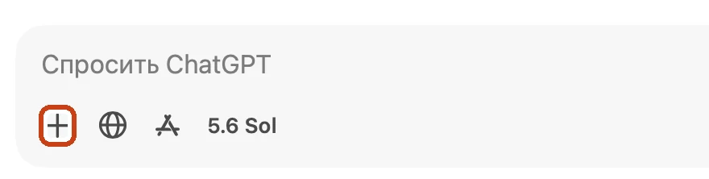
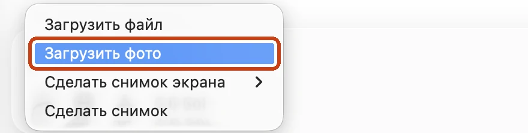
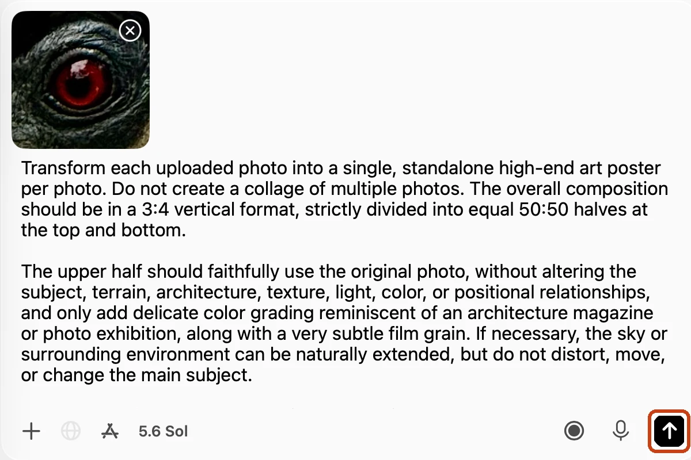
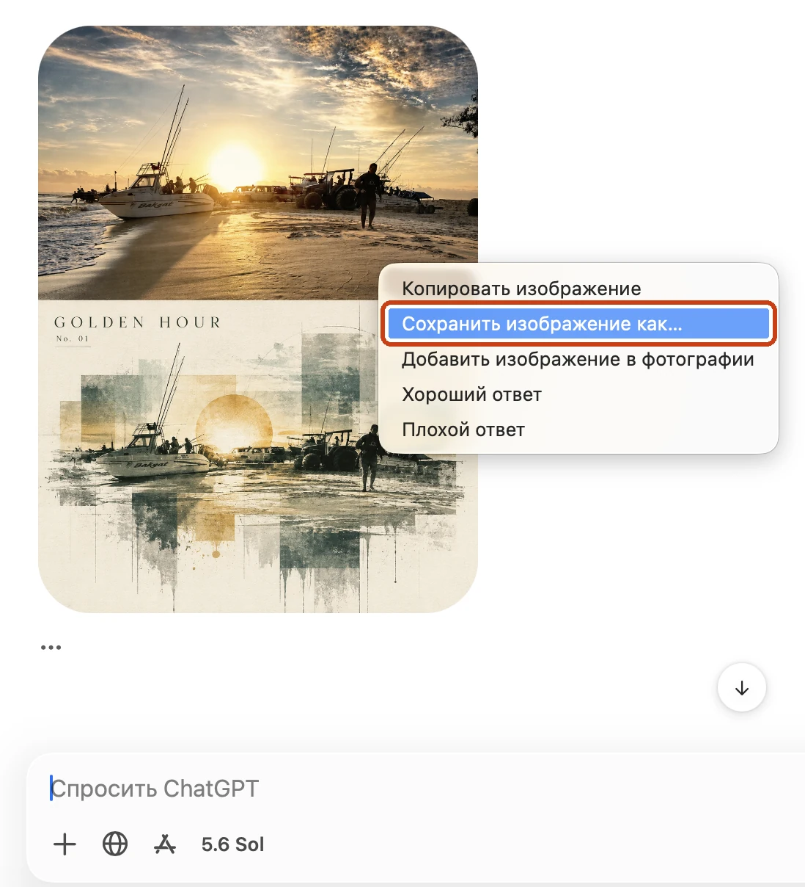

Как сделать постер из одного фото без опыта в дизайне?
Есть обычное фото с телефона, а хочется постер для стены или профиля без дизайнера и Фотошопа? Один снимок может выглядеть как обложка архитектурного журнала, но почему город, руки и боксёр превращаются в постеры одной серии? Ниже увидишь путь по шагам и заберёшь полный текст запроса для ChatGPT (промпт): прикрепишь своё фото, вставишь промпт и сможешь получить собственный постер даже на бесплатном тарифе
Каждый постер состоит из двух половин: сверху остаётся твоё фото, снизу появляется коллаж из деталей того же кадра. Сначала выбери один снимок с ясным главным объектом: зданием, человеком, заметной деталью или вывеской
Из России chatgpt.com без VPN не откроется. Включи VPN, открой сайт и войди в аккаунт или зарегистрируйся. Если пользуешься программой ChatGPT для Mac, открой её после входа в аккаунт
Открой новый чат в программе ChatGPT для Mac или на сайте chatgpt.com. Скрины ниже сняты на Mac, на Windows и в браузере шаги те же
Прикрепи одно фото: нажми «+» у поля сообщения. В программе для Mac выбери «Загрузить фото» (на Windows и на сайте chatgpt.com пункт называется чуть иначе, например Add photos & files). Выбери снимок на устройстве. Одно фото за раз помогает не смешать разные кадры в одном результате

Сначала нажми «+» у поля сообщения

Затем выбери «Загрузить фото»
Добавь текст: скопируй английский или русский промпт в конце страницы, вставь в то же сообщение рядом с прикреплённым фото и нажми кнопку со стрелкой вверх справа внизу

Фото и промпт в одном сообщении. Отправь запрос кнопкой в рамке
Сохрани постер: дождись результата, нажми правой кнопкой по изображению и выбери «Сохранить изображение как…». Генерация может занять несколько минут

Нажми правой кнопкой по постеру и выбери пункт в рамке
Условия на 26.09.2026: примеры ниже сделаны в ChatGPT на GPT-5.6 Sol с GPT Image 2, согласно подписи к исходной карусели. Генерация изображений есть и на бесплатном тарифе, но Free использует GPT-5.6 Luna, а лимиты на загрузку фото и генерацию ниже. Поэтому результат на Free может отличаться от примеров. Если лимит закончится, ChatGPT покажет уведомление. Справка OpenAI о Free и о доступности моделей
Хочется увидеть, каким может стать твоё фото?
Здесь шесть постеров из шести исходных снимков. У каждого постера верхняя половина опирается на исходную фотографию, а нижняя превращает ту же сцену в коллаж на светлой бумаге. Граница не всегда оказывается ровно посередине, даже когда промпт просит 50:50
Два готовых промпта находятся ниже: английский и русский. Выбери язык, на котором тебе удобнее читать и при необходимости править запрос. Скопируй одну версию целиком, прикрепи одно фото и отправь выбранный текст без сокращений
English
Transform each uploaded photo into a single, standalone high-end art poster per photo. Do not create a collage of multiple photos. The overall composition should be in a 3:4 vertical format, strictly divided into equal 50:50 halves at the top and bottom.
The upper half should faithfully use the original photo, without altering the subject, terrain, architecture, texture, light, color, or positional relationships, and only add delicate color grading reminiscent of an architecture magazine or photo exhibition, along with a very subtle film grain. If necessary, the sky or surrounding environment can be naturally extended, but do not distort, move, or change the main subject.
The lower half should be set against a warm ivory paper background and reconstruct the same landscape in a style reminiscent of "architectural collage + silkscreen + blueprints." Avoid simple geometric illustrations; instead, express elements extracted from the photo—such as terrain, buildings, plants, paths, and steps—using translucent color fields, overlapping rectangles, thin drafting lines, and partially retained photographic textures. At the bottom edge, incorporate a lingering aftereffect where faint vertical fragments or thin lines fade downward.
For the color palette, center on deep greens, blue-greens, olives, sages, and charcoals extracted from the photo, while retaining just one characteristic color as an accent in a single spot.
In the upper left of the lower half, place a 2–3 word English title representing the photo, set in a delicate serif font with wide letter spacing. Below it, add a number (e.g., No. 01), and in the upper right, place the year in small type.
Design it with the serene, sense-of-place aesthetic of an international architecture firm, a contemporary art exhibition, or a high-quality travel magazine. Avoid simplistic mountain logos, bland flat illustrations, generic landscapes, child-oriented styles, 3D effects, cyber expressions, cheap template vibes, unnecessary text, or logos.
Русский
Трансформируй каждую загруженную фотографию в отдельный самостоятельный художественный постер премиум-класса для каждой фотографии. Не создавай коллаж из нескольких фотографий. Общая композиция должна быть выполнена в вертикальном формате 3:4 и строго разделена на две равные части 50:50, верхнюю и нижнюю.
Верхняя половина должна максимально точно использовать оригинальную фотографию, без изменения объекта, ландшафта, архитектуры, текстур, освещения, цветов или взаимного расположения элементов. Разрешается только деликатная цветокоррекция в эстетике архитектурного журнала или фотовыставки, а также очень лёгкое плёночное зерно. При необходимости можно естественно расширить небо или окружающее пространство, но нельзя искажать, перемещать или изменять главный объект.
Нижняя половина должна быть выполнена на фоне тёплой бумаги цвета слоновой кости и представлять реконструкцию той же сцены в стиле, напоминающем «архитектурный коллаж + шелкография + чертежи». Избегай простых геометрических иллюстраций. Вместо этого используй элементы, извлечённые из фотографии, например рельеф, здания, растения, дорожки, ступени и другие характерные детали. Представляй их с помощью полупрозрачных цветовых полей, перекрывающихся прямоугольников, тонких чертёжных линий и частично сохранённых фотографических текстур. По нижнему краю добавь остаточный визуальный эффект: едва заметные вертикальные фрагменты или тонкие линии, которые постепенно растворяются и исчезают вниз.
Цветовая палитра должна основываться на глубоких зелёных, сине-зелёных, оливковых, шалфейных и угольных оттенках, извлечённых из фотографии, при этом сохрани только один характерный цвет в качестве акцента и используй его только в одном месте.
В верхнем левом углу нижней половины размести английское название из 2–3 слов, соответствующее фотографии. Используй тонкий изящный шрифтовой стиль с засечками и увеличенным межбуквенным интервалом. Ниже размести номер, например No. 01. В верхнем правом углу размести год мелким шрифтом.
Дизайн должен создавать спокойное ощущение места и выглядеть так, будто он создан международным архитектурным бюро, для выставки современного искусства или качественного туристического журнала.
Избегай простых логотипов гор, скучных плоских иллюстраций, типовых пейзажей, детского стиля, 3D-эффектов, киберпанк-эстетики, дешёвого шаблонного вида, лишнего текста и логотипов.
Скопируй одну версию, приложи один снимок и отправь в ChatGPT. Готовый постер сохрани через пункт «Сохранить изображение как…» и используй как основу для своего визуала